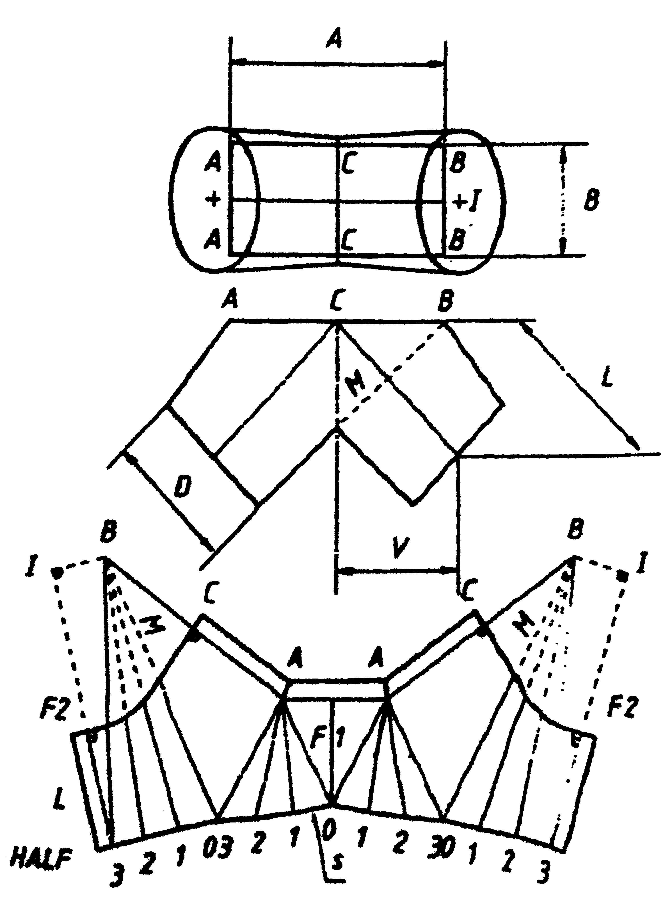

This application does not work properly without JavaScript enabled. Please enable it to continue.
Siphon Tube Circle-Rectangle No 1 - Hosenstuck Kreis-Rechteck No 1 - Broekstuk Cirkel-Rechthoek No 1 - Gaće (Hlače) Krug-Pravougaonik No 1
